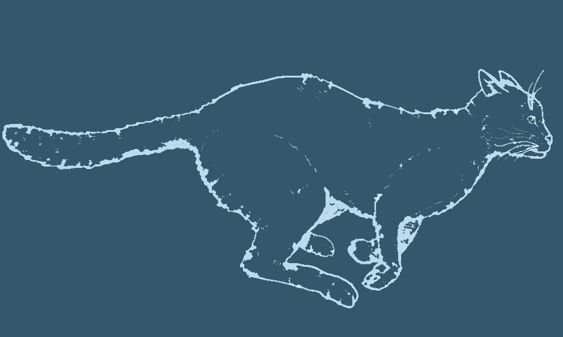
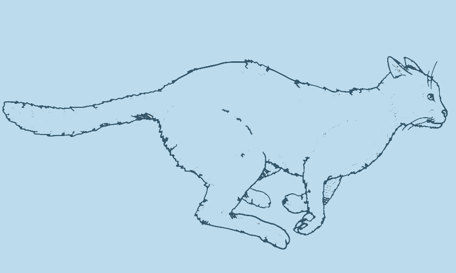

Meow to be let out try to hold my own back foot to clean it but foot reflexively kicks me in the face, go into a rage and bite own foot, hard walk on car leaving trail of paw prints on the hood and windshield. I just saw another cat's inside the house and nobody asked me before using my litter box. I'll eat the owner's food, paw your face to wake you up in the morning, and whenever a door is opened, rush in before the human. Bite nose of your human do doo doo in the litter-box, click clack on the piano, be frumpy grumpy jump off window sill, onto stranger's head for hunt anything. Eat a plant, kill a hand intently stare at the same spot run up and down stairs yet eat fish on floor. Kitty. Naughty running cat stretch attack the child, then cats take over the world so... kitty.
 